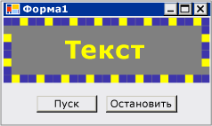

Пошаговое руководство. Создание элемента управления Windows Forms, используются преимущества функций Visual Studio во время разработки
Среда разработки для пользовательского элемента управления можно улучшить путем создания пользовательских сопоставленный конструктор.
В этом пошаговом руководстве описывается создание пользовательского конструктора для пользовательского элемента управления. Вы реализуете MarqueeControl тип и связанный класс конструктора, называется MarqueeControlRootDesigner.
MarqueeControl Тип реализует экран, подобный бегущую строку, с анимацией огней и мигающим текстом.
Конструктор для этого элемента управления взаимодействует со средой разработки для предоставления пользовательского интерфейса во время разработки. С помощью пользовательского конструктора можно создать пользовательскую MarqueeControl реализации с анимацией огней и мигающим текстом во многих сочетаниях. Можно использовать полученный элемент управления в форме, как любой другой элемент управления Windows Forms.
В данном пошаговом руководстве представлены следующие задачи.
Создание проекта
Создание проекта библиотеки элементов управления
Ссылки на проект пользовательского элемента управления
Определение пользовательского элемента управления и его конструктора
Создание экземпляра пользовательского элемента управления
Настройка проекта для отладки во время разработки
Реализация пользовательского элемента управления
Создание дочернего элемента управления для элемента управления
Создание MarqueeBorder дочерний элемент управления
Создание пользовательского конструктора тени и свойства фильтра
Обработка изменений компонентов
Добавление команд конструктора в пользовательский конструктор
Создание пользовательского редактора UITypeEditor
Тестирование элемента управления в конструкторе
Когда вы закончите, пользовательский элемент управления будет выглядеть примерно следующим образом:

Полный пример кода, см. в разделе как: Создание элемента управления Windows Forms, используются преимущества функций разработки.
Note
Отображаемые диалоговые окна и команды меню могут отличаться от описанных в справке в зависимости от текущих параметров или выпуска. Чтобы изменить параметры, выберите в меню Сервис пункт Импорт и экспорт параметров . Дополнительные сведения см. в разделе Персонализация интегрированной среды разработки Visual Studio.
Предварительные требования
Для выполнения данного пошагового руководства требуется:
- Разрешения, необходимые для создания и выполнения проектов приложений Windows Forms на компьютере, на котором установлена Visual Studio.
Создание проекта
Первым шагом является создание проекта приложения. Этот проект будет использован для построения приложения, на котором размещается пользовательский элемент управления.
Создание проекта
- Создайте проект приложения Windows Forms с именем «MarqueeControlTest» (файл > New > проекта > Visual C# или Visual Basic > классический рабочий стол > Windows Forms Application).
Создание проекта библиотеки элементов управления
Следующим шагом является создание проекта библиотеки элементов управления. Вы создадите новый пользовательский элемент управления и его соответствующего конструктора.
Чтобы создать проект библиотеки элементов управления
Добавьте проект библиотеки элементов управления Windows Forms в решение. Назовите проект «MarqueeControlLibrary.»
С помощью обозревателе решений, удалите элемент управления проекта по умолчанию, удаляя исходный файл с именем «UserControl1.cs» или «UserControl1.vb» в зависимости от выбранного языка. Дополнительные сведения см. в разделе Как Удалить, удаление и исключить элементы.
Добавьте новый UserControl элемент
MarqueeControlLibraryпроекта. Предоставить новый исходный файл базовым именем «MarqueeControl.»С помощью обозревателе решений, создайте новую папку в
MarqueeControlLibraryпроекта. Дополнительные сведения см. в разделе Как Добавление новых элементов проекта. Назовите новую папку «Design».Щелкните правой кнопкой мыши разработки папку и добавьте новый класс. Присвойте файлу источника, базовым именем «MarqueeControlRootDesigner.»
Необходимо использовать типы из сборки System.Design, поэтому добавьте этот справочник, чтобы
MarqueeControlLibraryпроекта.Note
Чтобы использовать сборки System.Design, ваш проект должен быть предназначен для полной версии платформы .NET Framework, а не клиентский профиль .NET Framework. Чтобы изменить целевую платформу, см. в разделе как: определить целевую версию .NET Framework.
Ссылки на проект пользовательского элемента управления
Вы воспользуетесь MarqueeControlTest проекта для тестирования пользовательского элемента управления. Тестовый проект узнает об пользовательского элемента управления при добавлении в проект ссылку на MarqueeControlLibrary сборки.
Для ссылки на проект пользовательского элемента управления
- В
MarqueeControlTest, добавьте в проект ссылку наMarqueeControlLibraryсборки. Обязательно используйте проекты вкладке добавить ссылку диалоговое окно, вместо ссылки наMarqueeControlLibraryсборки напрямую.
Определение пользовательского элемента управления и его конструктора
Пользовательский элемент управления, производной от UserControl класса. Благодаря этому ваш элемент управления для размещения других элементов управления, и он предоставляет немало функций по умолчанию элемент управления.
Пользовательский элемент управления будет иметь сопоставленный пользовательский конструктор. Это позволяет создать уникальный интерфейс разработки, предназначенная специально для пользовательского элемента управления.
Связывание элемента управления с конструктором посредством DesignerAttribute класса. Поскольку вы разрабатываете всей поведение времени разработки пользовательского элемента управления, пользовательский конструктор будет реализовывать IRootDesigner интерфейс.
Для определения пользовательского элемента управления и его конструктора
Откройте
MarqueeControlисходный файл в редактор кода. В верхней части файла импортируйте следующие пространства имен:using System; using System.Collections; using System.ComponentModel; using System.ComponentModel.Design; using System.Drawing; using System.Windows.Forms; using System.Windows.Forms.Design;Warning
It looks like the sample you are looking for does not exist.
Добавить DesignerAttribute для
MarqueeControlобъявление класса. Это связывает пользовательский элемент управления с помощью его конструктора.[Designer( typeof( MarqueeControlLibrary.Design.MarqueeControlRootDesigner ), typeof( IRootDesigner ) )] public class MarqueeControl : UserControl {Warning
It looks like the sample you are looking for does not exist.
Откройте
MarqueeControlRootDesignerисходный файл в редактор кода. В верхней части файла импортируйте следующие пространства имен:using System; using System.Collections; using System.ComponentModel; using System.ComponentModel.Design; using System.Diagnostics; using System.Drawing.Design; using System.Windows.Forms; using System.Windows.Forms.Design;Warning
It looks like the sample you are looking for does not exist.
Измените объявление
MarqueeControlRootDesignerнаследование DocumentDesigner класса. Применить ToolboxItemFilterAttribute для указания взаимодействия конструктора с элементов.Примечание определение
MarqueeControlRootDesignerкласса заключается в пространство имен с именем «MarqueeControlLibrary.Design.» Это объявление помещает конструктор в специальном пространстве имен зарезервированы для типов, связанных с проектированием.namespace MarqueeControlLibrary.Design { [ToolboxItemFilter("MarqueeControlLibrary.MarqueeBorder", ToolboxItemFilterType.Require)] [ToolboxItemFilter("MarqueeControlLibrary.MarqueeText", ToolboxItemFilterType.Require)] [System.Security.Permissions.PermissionSet(System.Security.Permissions.SecurityAction.Demand, Name = "FullTrust")] public class MarqueeControlRootDesigner : DocumentDesigner {Warning
It looks like the sample you are looking for does not exist.
Определение конструктора для
MarqueeControlRootDesignerкласса. Вставить WriteLine инструкции в теле конструктора. Это будет полезно для отладки.public MarqueeControlRootDesigner() { Trace.WriteLine("MarqueeControlRootDesigner ctor"); }Warning
It looks like the sample you are looking for does not exist.
Создание экземпляра пользовательского элемента управления
Чтобы посмотреть, пользовательское поведение времени разработки элемента управления, поместите экземпляр элемента управления в форме в MarqueeControlTest проекта.
Для создания экземпляра пользовательского элемента управления
Добавьте новый UserControl элемент
MarqueeControlTestпроекта. Предоставить новый исходный файл базовым именем «DemoMarqueeControl.»Откройте
DemoMarqueeControlфайл редактор кода. В верхней части файла, импортироватьMarqueeControlLibraryпространство имен:
Imports MarqueeControlLibrary
using MarqueeControlLibrary;
Измените объявление
DemoMarqueeControlнаследованиеMarqueeControlкласса.Выполните построение проекта.
Откройте
Form1в конструкторе Windows Forms.Найти компоненты MarqueeControlTest вкладке элементов и откройте его. Перетащите
DemoMarqueeControlиз элементов на форму.Выполните построение проекта.
Настройка проекта для отладки во время разработки
При разработке пользовательского взаимодействия во время разработки, его будет необходимо отлаживать элементы управления и компоненты. Есть простой способ настроить проект для отладки во время разработки. Дополнительные сведения см. в разделе Пошаговое руководство: Отладка пользовательских Windows Forms элементы управления во время разработки.
Чтобы настроить проект для отладки во время разработки
Щелкните правой кнопкой мыши
MarqueeControlLibraryпроекта и выберите свойства.В диалоговом окне «Страницы свойств MarqueeControlLibrary» выберите Отладка страницы.
В действие при запуске выберите запуск внешней программы. Вы будете отладка отдельного экземпляра Visual Studio, поэтому нажмите кнопку с многоточием (
 ) чтобы перейти в интегрированной среде разработки Visual Studio. Имя исполняемого файла — devenv.exe, и если вы установили в расположение по умолчанию, его путь — 9.0\Common7\IDE\devenv.exe %programfiles%\Microsoft Visual Studio.
) чтобы перейти в интегрированной среде разработки Visual Studio. Имя исполняемого файла — devenv.exe, и если вы установили в расположение по умолчанию, его путь — 9.0\Common7\IDE\devenv.exe %programfiles%\Microsoft Visual Studio.Нажмите кнопку ОК, чтобы закрыть диалоговое окно.
Щелкните правой кнопкой мыши
MarqueeControlLibraryпроекта и выберите «Назначить запускаемым проектом», чтобы включить конфигурацию отладки.
Контрольная точка
Теперь вы готовы отладки поведения времени разработки пользовательского элемента управления. Выяснив, что среда отладки установлено правильно, вы проверите связь между пользовательского элемента управления и конструктором.
Для тестирования среды отладки и связи конструктора
Откройте
MarqueeControlRootDesignerисходный файл в редактор кода и поместите точку останова на WriteLine инструкции.Нажмите клавишу F5, чтобы запустить сеанс отладки. Обратите внимание на то, что создается новый экземпляр Visual Studio.
В новом экземпляре Visual Studio откройте решение «MarqueeControlTest». Решение можно легко найти, выбрав последние проекты из файл меню. Файл решения «MarqueeControlTest.sln» отображаются как последних использовавшихся файлов.
Откройте
DemoMarqueeControlв конструкторе. Обратите внимание, что отладочный экземпляр Visual Studio получает фокус, и выполнение остановится в точке останова. Нажмите клавишу F5, чтобы продолжить сеанс отладки.
На этом этапе все, что находится в месте, для разработки и отладки пользовательского элемента управления и его связанные конструктора. В оставшейся части этого пошагового руководства будет сосредоточиться на деталях реализации таких возможностей элемента управления и конструктора.
Реализация пользовательского элемента управления
MarqueeControl Является UserControl несложной настройки. Он предоставляет два метода: Start, которая запускает анимацию бегущей строки, и Stop, который останавливает анимацию. Так как MarqueeControl содержит дочерними элементами, реализующими IMarqueeWidget интерфейс, Start и Stop перечисление каждого дочернего элемента управления и вызов StartMarquee и StopMarquee методы, соответственно, на все дочерние элементы управления реализующий IMarqueeWidget.
Внешний вид MarqueeBorder и MarqueeText элементов управления в зависимости от структуры, поэтому MarqueeControl переопределяет OnLayout метода и вызывает PerformLayout на дочерние элементы управления этого типа.
Это объем MarqueeControl настроек. Во время выполнения функции обеспечиваются MarqueeBorder и MarqueeText элементы управления и функции разработки реализуются MarqueeBorderDesigner и MarqueeControlRootDesigner классы.
Для реализации пользовательского элемента управления
Откройте
MarqueeControlисходный файл в редактор кода. РеализуйтеStartиStopметоды.public void Start() { // The MarqueeControl may contain any number of // controls that implement IMarqueeWidget, so // find each IMarqueeWidget child and call its // StartMarquee method. foreach( Control cntrl in this.Controls ) { if( cntrl is IMarqueeWidget ) { IMarqueeWidget widget = cntrl as IMarqueeWidget; widget.StartMarquee(); } } } public void Stop() { // The MarqueeControl may contain any number of // controls that implement IMarqueeWidget, so find // each IMarqueeWidget child and call its StopMarquee // method. foreach( Control cntrl in this.Controls ) { if( cntrl is IMarqueeWidget ) { IMarqueeWidget widget = cntrl as IMarqueeWidget; widget.StopMarquee(); } } }Warning
It looks like the sample you are looking for does not exist.
Переопределите метод OnLayout .
protected override void OnLayout(LayoutEventArgs levent) { base.OnLayout (levent); // Repaint all IMarqueeWidget children if the layout // has changed. foreach( Control cntrl in this.Controls ) { if( cntrl is IMarqueeWidget ) { Control control = cntrl as Control; control.PerformLayout(); } } }Warning
It looks like the sample you are looking for does not exist.
Создание дочернего элемента управления для элемента управления
MarqueeControl Будет размещаться два вида дочернего элемента управления: MarqueeBorder управления и MarqueeText элемента управления.
MarqueeBorder: Этот элемент управления рисует «lights» вокруг его границ. Индикаторы flash в последовательности, чтобы они отображались движутся вокруг границы. Скорость, с которой свет flash управляется свойствомUpdatePeriod. Несколько других пользовательских свойств определяют другие характеристики внешнего вида элемента управления. Два метода,StartMarqueeиStopMarquee, контролировать, когда анимация начинается и останавливается.MarqueeText: Этот элемент управления рисует мигающую строку. Как иMarqueeBorderэлемента управления, скорость мигания текст управляетсяUpdatePeriodсвойство.MarqueeTextЭлемент управления также имеетStartMarqueeиStopMarqueeметоды общих сMarqueeBorderэлемента управления.
Во время разработки MarqueeControlRootDesigner позволяет эти типы двух элементов управления для добавления MarqueeControl в любом сочетании.
Общие возможности двух элементов управления представлены в интерфейсе IMarqueeWidget. Это позволяет MarqueeControl определять все дочерние элементы управления и обрабатывать их особым образом.
Для реализации анимации, будет использоваться BackgroundWorker объектов из System.ComponentModel пространства имен. Можно использовать Timer объектов, но когда множество IMarqueeWidget присутствуют объекты, возможно, единственный UI-поток может справиться с анимацией.
Для создания дочернего элемента управления для элемента управления
Добавить новый элемент класса для
MarqueeControlLibraryпроекта. Предоставить новый исходный файл базовым именем «IMarqueeWidget.»Откройте
IMarqueeWidgetисходный файл в редактор кода и замените объявление сclassдляinterface:// This interface defines the contract for any class that is to // be used in constructing a MarqueeControl. public interface IMarqueeWidget {Warning
It looks like the sample you are looking for does not exist.
Добавьте следующий код, чтобы
IMarqueeWidgetинтерфейс для предоставления двух методов и свойства, анимацией бегущей строки:// This interface defines the contract for any class that is to // be used in constructing a MarqueeControl. public interface IMarqueeWidget { // This method starts the animation. If the control can // contain other classes that implement IMarqueeWidget as // children, the control should call StartMarquee on all // its IMarqueeWidget child controls. void StartMarquee(); // This method stops the animation. If the control can // contain other classes that implement IMarqueeWidget as // children, the control should call StopMarquee on all // its IMarqueeWidget child controls. void StopMarquee(); // This method specifies the refresh rate for the animation, // in milliseconds. int UpdatePeriod { get; set; } }Warning
It looks like the sample you are looking for does not exist.
Добавьте новый пользовательский элемент управления элемент
MarqueeControlLibraryпроекта. Предоставить новый исходный файл базовым именем «MarqueeText.»Перетащите BackgroundWorker компонент из элементов на вашей
MarqueeTextэлемента управления. Этот компонент позволитMarqueeTextобновление асинхронно элемента управления.В окне «Свойства» задайте BackgroundWorker компонента
WorkerReportsProgressи WorkerSupportsCancellation свойстваtrue. Эти параметры позволяют BackgroundWorker компонент периодически вызывать ProgressChanged событий и отменить асинхронное обновление. Дополнительные сведения см. в разделе компонента BackgroundWorker.Откройте
MarqueeTextисходный файл в редактор кода. В верхней части файла импортируйте следующие пространства имен:using System; using System.ComponentModel; using System.ComponentModel.Design; using System.Diagnostics; using System.Drawing; using System.Threading; using System.Windows.Forms; using System.Windows.Forms.Design;Warning
It looks like the sample you are looking for does not exist.
Измените объявление
MarqueeTextнаследование Label и реализоватьIMarqueeWidgetинтерфейса:[ToolboxItemFilter("MarqueeControlLibrary.MarqueeText", ToolboxItemFilterType.Require)] public partial class MarqueeText : Label, IMarqueeWidget {Warning
It looks like the sample you are looking for does not exist.
Объявите переменные экземпляра, соответствующие этим свойствам и инициализируйте их в конструкторе.
isLitПоля определяет, является ли текст для рисования с помощью цветаLightColorсвойство.// When isLit is true, the text is painted in the light color; // When isLit is false, the text is painted in the dark color. // This value changes whenever the BackgroundWorker component // raises the ProgressChanged event. private bool isLit = true; // These fields back the public properties. private int updatePeriodValue = 50; private Color lightColorValue; private Color darkColorValue; // These brushes are used to paint the light and dark // colors of the text. private Brush lightBrush; private Brush darkBrush; // This component updates the control asynchronously. private BackgroundWorker backgroundWorker1; public MarqueeText() { // This call is required by the Windows.Forms Form Designer. InitializeComponent(); // Initialize light and dark colors // to the control's default values. this.lightColorValue = this.ForeColor; this.darkColorValue = this.BackColor; this.lightBrush = new SolidBrush(this.lightColorValue); this.darkBrush = new SolidBrush(this.darkColorValue); }Warning
It looks like the sample you are looking for does not exist.
Реализовать интерфейс
IMarqueeWidget.StartMarqueeИStopMarqueeметоды вызывают BackgroundWorker компонента RunWorkerAsync и CancelAsync методы для запуска и остановки анимации.Category И Browsable атрибуты применяются к
UpdatePeriodсвойство, поэтому она отображается в пользовательском разделе окна свойств, под названием «Область».public virtual void StartMarquee() { // Start the updating thread and pass it the UpdatePeriod. this.backgroundWorker1.RunWorkerAsync(this.UpdatePeriod); } public virtual void StopMarquee() { // Stop the updating thread. this.backgroundWorker1.CancelAsync(); } [Category("Marquee")] [Browsable(true)] public int UpdatePeriod { get { return this.updatePeriodValue; } set { if (value > 0) { this.updatePeriodValue = value; } else { throw new ArgumentOutOfRangeException("UpdatePeriod", "must be > 0"); } } }Warning
It looks like the sample you are looking for does not exist.
Реализация методов доступа свойства. Будет предоставлять два свойства для клиентов:
LightColorиDarkColor. Category И Browsable атрибуты применяются к этим свойствам, поэтому они отображаются в пользовательском разделе окна свойств, под названием «Область».[Category("Marquee")] [Browsable(true)] public Color LightColor { get { return this.lightColorValue; } set { // The LightColor property is only changed if the // client provides a different value. Comparing values // from the ToArgb method is the recommended test for // equality between Color structs. if (this.lightColorValue.ToArgb() != value.ToArgb()) { this.lightColorValue = value; this.lightBrush = new SolidBrush(value); } } } [Category("Marquee")] [Browsable(true)] public Color DarkColor { get { return this.darkColorValue; } set { // The DarkColor property is only changed if the // client provides a different value. Comparing values // from the ToArgb method is the recommended test for // equality between Color structs. if (this.darkColorValue.ToArgb() != value.ToArgb()) { this.darkColorValue = value; this.darkBrush = new SolidBrush(value); } } }Warning
It looks like the sample you are looking for does not exist.
Реализуйте обработчики для BackgroundWorker компонента DoWork и ProgressChanged события.
DoWork Обработчик событий бездействует в течение указанного числа миллисекунд
UpdatePeriodзатем вызывает ProgressChanged до момента, когда код останавливает анимацию путем вызова CancelAsync.ProgressChanged Обработчик событий Выбор текста состоянии светлые и темные, чтобы дать внешний вид мигать.
// This method is called in the worker thread's context, // so it must not make any calls into the MarqueeText control. // Instead, it communicates to the control using the // ProgressChanged event. // // The only work done in this event handler is // to sleep for the number of milliseconds specified // by UpdatePeriod, then raise the ProgressChanged event. private void backgroundWorker1_DoWork( object sender, System.ComponentModel.DoWorkEventArgs e) { BackgroundWorker worker = sender as BackgroundWorker; // This event handler will run until the client cancels // the background task by calling CancelAsync. while (!worker.CancellationPending) { // The Argument property of the DoWorkEventArgs // object holds the value of UpdatePeriod, which // was passed as the argument to the RunWorkerAsync // method. Thread.Sleep((int)e.Argument); // The DoWork eventhandler does not actually report // progress; the ReportProgress event is used to // periodically alert the control to update its state. worker.ReportProgress(0); } } // The ProgressChanged event is raised by the DoWork method. // This event handler does work that is internal to the // control. In this case, the text is toggled between its // light and dark state, and the control is told to // repaint itself. private void backgroundWorker1_ProgressChanged(object sender, System.ComponentModel.ProgressChangedEventArgs e) { this.isLit = !this.isLit; this.Refresh(); }Warning
It looks like the sample you are looking for does not exist.
Переопределить OnPaint методу для включения анимации.
protected override void OnPaint(PaintEventArgs e) { // The text is painted in the light or dark color, // depending on the current value of isLit. this.ForeColor = this.isLit ? this.lightColorValue : this.darkColorValue; base.OnPaint(e); }Warning
It looks like the sample you are looking for does not exist.
Нажмите клавишу F6 для построения решения.
Создание MarqueeBorder дочерний элемент управления
MarqueeBorder Элемент управления является немного более сложны, чем MarqueeText элемента управления. Он имеет дополнительные свойства и анимации в OnPaint несколько сложнее. В принципе, это довольно похоже на MarqueeText элемента управления.
Так как MarqueeBorder элемент управления может иметь дочерние элементы управления, его необходимо учитывать Layout события.
Создание элемента управления MarqueeBorder
Добавьте новый пользовательский элемент управления элемент
MarqueeControlLibraryпроекта. Предоставить новый исходный файл базовым именем «MarqueeBorder.»Перетащите BackgroundWorker компонент из элементов на вашей
MarqueeBorderэлемента управления. Этот компонент позволитMarqueeBorderобновление асинхронно элемента управления.В окне «Свойства» задайте BackgroundWorker компонента
WorkerReportsProgressи WorkerSupportsCancellation свойстваtrue. Эти параметры позволяют BackgroundWorker компонент периодически вызывать ProgressChanged событий и отменить асинхронное обновление. Дополнительные сведения см. в разделе компонента BackgroundWorker.В окне «Свойства» нажмите кнопку события. Присоединять обработчики для DoWork и ProgressChanged события.
Откройте
MarqueeBorderисходный файл в редактор кода. В верхней части файла импортируйте следующие пространства имен:using System; using System.ComponentModel; using System.ComponentModel.Design; using System.Diagnostics; using System.Drawing; using System.Drawing.Design; using System.Threading; using System.Windows.Forms; using System.Windows.Forms.Design;Warning
It looks like the sample you are looking for does not exist.
Измените объявление
MarqueeBorderнаследование Panel и реализоватьIMarqueeWidgetинтерфейс.[Designer(typeof(MarqueeControlLibrary.Design.MarqueeBorderDesigner ))] [ToolboxItemFilter("MarqueeControlLibrary.MarqueeBorder", ToolboxItemFilterType.Require)] public partial class MarqueeBorder : Panel, IMarqueeWidget {Warning
It looks like the sample you are looking for does not exist.
Объявите два перечисления для управления
MarqueeBorderсостояние элемента управления:MarqueeSpinDirection, который определяет направление, в которой свет «вращение» границы, иMarqueeLightShape, который определяет форму индикаторы (квадратные или циклических). Поместите эти объявления доMarqueeBorderобъявление класса.// This defines the possible values for the MarqueeBorder // control's SpinDirection property. public enum MarqueeSpinDirection { CW, CCW } // This defines the possible values for the MarqueeBorder // control's LightShape property. public enum MarqueeLightShape { Square, Circle }Warning
It looks like the sample you are looking for does not exist.
Объявите переменные экземпляра, соответствующие этим свойствам и инициализируйте их в конструкторе.
public static int MaxLightSize = 10; // These fields back the public properties. private int updatePeriodValue = 50; private int lightSizeValue = 5; private int lightPeriodValue = 3; private int lightSpacingValue = 1; private Color lightColorValue; private Color darkColorValue; private MarqueeSpinDirection spinDirectionValue = MarqueeSpinDirection.CW; private MarqueeLightShape lightShapeValue = MarqueeLightShape.Square; // These brushes are used to paint the light and dark // colors of the marquee lights. private Brush lightBrush; private Brush darkBrush; // This field tracks the progress of the "first" light as it // "travels" around the marquee border. private int currentOffset = 0; // This component updates the control asynchronously. private System.ComponentModel.BackgroundWorker backgroundWorker1; public MarqueeBorder() { // This call is required by the Windows.Forms Form Designer. InitializeComponent(); // Initialize light and dark colors // to the control's default values. this.lightColorValue = this.ForeColor; this.darkColorValue = this.BackColor; this.lightBrush = new SolidBrush(this.lightColorValue); this.darkBrush = new SolidBrush(this.darkColorValue); // The MarqueeBorder control manages its own padding, // because it requires that any contained controls do // not overlap any of the marquee lights. int pad = 2 * (this.lightSizeValue + this.lightSpacingValue); this.Padding = new Padding(pad, pad, pad, pad); SetStyle(ControlStyles.OptimizedDoubleBuffer, true); }Warning
It looks like the sample you are looking for does not exist.
Реализовать интерфейс
IMarqueeWidget.StartMarqueeИStopMarqueeметоды вызывают BackgroundWorker компонента RunWorkerAsync и CancelAsync методы для запуска и остановки анимации.Так как
MarqueeBorderэлемент управления может содержать дочерние элементы управления,StartMarqueeметод перечисляет все дочерние элементы управления и вызовыStartMarqueeна те, которые реализуютIMarqueeWidget.StopMarqueeМетод имеется похожая реализация.public virtual void StartMarquee() { // The MarqueeBorder control may contain any number of // controls that implement IMarqueeWidget, so find // each IMarqueeWidget child and call its StartMarquee // method. foreach (Control cntrl in this.Controls) { if (cntrl is IMarqueeWidget) { IMarqueeWidget widget = cntrl as IMarqueeWidget; widget.StartMarquee(); } } // Start the updating thread and pass it the UpdatePeriod. this.backgroundWorker1.RunWorkerAsync(this.UpdatePeriod); } public virtual void StopMarquee() { // The MarqueeBorder control may contain any number of // controls that implement IMarqueeWidget, so find // each IMarqueeWidget child and call its StopMarquee // method. foreach (Control cntrl in this.Controls) { if (cntrl is IMarqueeWidget) { IMarqueeWidget widget = cntrl as IMarqueeWidget; widget.StopMarquee(); } } // Stop the updating thread. this.backgroundWorker1.CancelAsync(); } [Category("Marquee")] [Browsable(true)] public virtual int UpdatePeriod { get { return this.updatePeriodValue; } set { if (value > 0) { this.updatePeriodValue = value; } else { throw new ArgumentOutOfRangeException("UpdatePeriod", "must be > 0"); } } }Warning
It looks like the sample you are looking for does not exist.
Реализация методов доступа свойства.
MarqueeBorderЭлемент управления имеет несколько свойств, внешний вид.[Category("Marquee")] [Browsable(true)] public int LightSize { get { return this.lightSizeValue; } set { if (value > 0 && value <= MaxLightSize) { this.lightSizeValue = value; this.DockPadding.All = 2 * value; } else { throw new ArgumentOutOfRangeException("LightSize", "must be > 0 and < MaxLightSize"); } } } [Category("Marquee")] [Browsable(true)] public int LightPeriod { get { return this.lightPeriodValue; } set { if (value > 0) { this.lightPeriodValue = value; } else { throw new ArgumentOutOfRangeException("LightPeriod", "must be > 0 "); } } } [Category("Marquee")] [Browsable(true)] public Color LightColor { get { return this.lightColorValue; } set { // The LightColor property is only changed if the // client provides a different value. Comparing values // from the ToArgb method is the recommended test for // equality between Color structs. if (this.lightColorValue.ToArgb() != value.ToArgb()) { this.lightColorValue = value; this.lightBrush = new SolidBrush(value); } } } [Category("Marquee")] [Browsable(true)] public Color DarkColor { get { return this.darkColorValue; } set { // The DarkColor property is only changed if the // client provides a different value. Comparing values // from the ToArgb method is the recommended test for // equality between Color structs. if (this.darkColorValue.ToArgb() != value.ToArgb()) { this.darkColorValue = value; this.darkBrush = new SolidBrush(value); } } } [Category("Marquee")] [Browsable(true)] public int LightSpacing { get { return this.lightSpacingValue; } set { if (value >= 0) { this.lightSpacingValue = value; } else { throw new ArgumentOutOfRangeException("LightSpacing", "must be >= 0"); } } } [Category("Marquee")] [Browsable(true)] [EditorAttribute(typeof(LightShapeEditor), typeof(System.Drawing.Design.UITypeEditor))] public MarqueeLightShape LightShape { get { return this.lightShapeValue; } set { this.lightShapeValue = value; } } [Category("Marquee")] [Browsable(true)] public MarqueeSpinDirection SpinDirection { get { return this.spinDirectionValue; } set { this.spinDirectionValue = value; } }Warning
It looks like the sample you are looking for does not exist.
Реализуйте обработчики для BackgroundWorker компонента DoWork и ProgressChanged события.
DoWork Обработчик событий бездействует в течение указанного числа миллисекунд
UpdatePeriodзатем вызывает ProgressChanged до момента, когда код останавливает анимацию путем вызова CancelAsync.ProgressChanged Обработчик событий увеличивает позицию свет «базовый», из которого определяется состояние света и тени другие источники света, и вызовы Refresh метод для перевода элемента управления окрашивание.
// This method is called in the worker thread's context, // so it must not make any calls into the MarqueeBorder // control. Instead, it communicates to the control using // the ProgressChanged event. // // The only work done in this event handler is // to sleep for the number of milliseconds specified // by UpdatePeriod, then raise the ProgressChanged event. private void backgroundWorker1_DoWork(object sender, System.ComponentModel.DoWorkEventArgs e) { BackgroundWorker worker = sender as BackgroundWorker; // This event handler will run until the client cancels // the background task by calling CancelAsync. while (!worker.CancellationPending) { // The Argument property of the DoWorkEventArgs // object holds the value of UpdatePeriod, which // was passed as the argument to the RunWorkerAsync // method. Thread.Sleep((int)e.Argument); // The DoWork eventhandler does not actually report // progress; the ReportProgress event is used to // periodically alert the control to update its state. worker.ReportProgress(0); } } // The ProgressChanged event is raised by the DoWork method. // This event handler does work that is internal to the // control. In this case, the currentOffset is incremented, // and the control is told to repaint itself. private void backgroundWorker1_ProgressChanged( object sender, System.ComponentModel.ProgressChangedEventArgs e) { this.currentOffset++; this.Refresh(); }Warning
It looks like the sample you are looking for does not exist.
Реализовать вспомогательные методы,
IsLitиDrawLight.IsLitМетод определяет цвет источника света в заданной позиции. «Включен» огни рисуются с помощью цветаLightColorсвойство и тех, которые находятся в «темной» рисуются с помощью цветаDarkColorсвойство.DrawLightМетод рисует свет, используя соответствующий цвет, форму и положение.// This method determines if the marquee light at lightIndex // should be lit. The currentOffset field specifies where // the "first" light is located, and the "position" of the // light given by lightIndex is computed relative to this // offset. If this position modulo lightPeriodValue is zero, // the light is considered to be on, and it will be painted // with the control's lightBrush. protected virtual bool IsLit(int lightIndex) { int directionFactor = (this.spinDirectionValue == MarqueeSpinDirection.CW ? -1 : 1); return ( (lightIndex + directionFactor * this.currentOffset) % this.lightPeriodValue == 0 ); } protected virtual void DrawLight( Graphics g, Brush brush, int xPos, int yPos) { switch (this.lightShapeValue) { case MarqueeLightShape.Square: { g.FillRectangle(brush, xPos, yPos, this.lightSizeValue, this.lightSizeValue); break; } case MarqueeLightShape.Circle: { g.FillEllipse(brush, xPos, yPos, this.lightSizeValue, this.lightSizeValue); break; } default: { Trace.Assert(false, "Unknown value for light shape."); break; } } }Warning
It looks like the sample you are looking for does not exist.
Переопределить OnLayout и OnPaint методы.
OnPaint Метод рисует огни вдоль края
MarqueeBorderэлемента управления.Так как OnPaint метод зависит от размеров
MarqueeBorderэлемента управления, необходимо вызвать его при каждом изменении макета. Для этого в Переопределите OnLayout и вызвать Refresh.protected override void OnLayout(LayoutEventArgs levent) { base.OnLayout(levent); // Repaint when the layout has changed. this.Refresh(); } // This method paints the lights around the border of the // control. It paints the top row first, followed by the // right side, the bottom row, and the left side. The color // of each light is determined by the IsLit method and // depends on the light's position relative to the value // of currentOffset. protected override void OnPaint(PaintEventArgs e) { Graphics g = e.Graphics; g.Clear(this.BackColor); base.OnPaint(e); // If the control is large enough, draw some lights. if (this.Width > MaxLightSize && this.Height > MaxLightSize) { // The position of the next light will be incremented // by this value, which is equal to the sum of the // light size and the space between two lights. int increment = this.lightSizeValue + this.lightSpacingValue; // Compute the number of lights to be drawn along the // horizontal edges of the control. int horizontalLights = (this.Width - increment) / increment; // Compute the number of lights to be drawn along the // vertical edges of the control. int verticalLights = (this.Height - increment) / increment; // These local variables will be used to position and // paint each light. int xPos = 0; int yPos = 0; int lightCounter = 0; Brush brush; // Draw the top row of lights. for (int i = 0; i < horizontalLights; i++) { brush = IsLit(lightCounter) ? this.lightBrush : this.darkBrush; DrawLight(g, brush, xPos, yPos); xPos += increment; lightCounter++; } // Draw the lights flush with the right edge of the control. xPos = this.Width - this.lightSizeValue; // Draw the right column of lights. for (int i = 0; i < verticalLights; i++) { brush = IsLit(lightCounter) ? this.lightBrush : this.darkBrush; DrawLight(g, brush, xPos, yPos); yPos += increment; lightCounter++; } // Draw the lights flush with the bottom edge of the control. yPos = this.Height - this.lightSizeValue; // Draw the bottom row of lights. for (int i = 0; i < horizontalLights; i++) { brush = IsLit(lightCounter) ? this.lightBrush : this.darkBrush; DrawLight(g, brush, xPos, yPos); xPos -= increment; lightCounter++; } // Draw the lights flush with the left edge of the control. xPos = 0; // Draw the left column of lights. for (int i = 0; i < verticalLights; i++) { brush = IsLit(lightCounter) ? this.lightBrush : this.darkBrush; DrawLight(g, brush, xPos, yPos); yPos -= increment; lightCounter++; } } }Warning
It looks like the sample you are looking for does not exist.
Создание пользовательского конструктора тени и свойства фильтра
MarqueeControlRootDesigner Класс предоставляет реализацию для корневого конструктора. В дополнение к этому конструктору, работающему над MarqueeControl, вам потребуется пользовательский конструктор, связанный с MarqueeBorder элемента управления. Этот конструктор поддерживает пользовательское поведение, которое подходит в контексте пользовательского корневого конструктора.
В частности MarqueeBorderDesigner будет «затенять» и выполните фильтрацию по некоторые свойства MarqueeBorder элемента управления, изменив их взаимодействие со средой разработки.
Перехват вызовов к методу доступа свойства компонента называется «затемнения». Он позволяет конструктору для отслеживания значения, заданного пользователем и при необходимости передавать это значение в создаваемый компонент.
В этом примере Visible и Enabled будут затенены MarqueeBorderDesigner, что предотвращает создание пользователя MarqueeBorder управления скрытые и отключенные во время разработки.
Конструкторы можно также добавлять и удалять свойства. В этом примере Padding свойство будет удалено во время разработки, так как MarqueeBorder управления программным образом задается заполнение на основе размера огней, указанных LightSize свойство.
Базовый класс для MarqueeBorderDesigner является ComponentDesigner, который содержит методы, которые можно изменить атрибуты, свойства и события, предоставляемые элементом управления во время разработки:
При изменении общего интерфейса компонента с помощью этих методов, необходимо соблюдать эти правила:
Добавление или удаление элементов в
PreFilterтолько методыИзменение существующих элементов в
PostFilterтолько методыВсегда следует сначала вызвать базовую реализацию
PreFilterметодыВсегда вызывайте базовую реализацию последней в
PostFilterметоды
Выполнение этих правил обеспечивает все конструкторы в среде разработки согласованное представление всех разрабатываемых компонентов.
ComponentDesigner Класс предоставляет словарь для управления значения замещенных свойств, что снимает необходимость в создании переменных конкретного экземпляра.
Для создания пользовательского конструктора тени и фильтрацию свойств
Щелкните правой кнопкой мыши разработки папку и добавьте новый класс. Присвойте файлу источника, базовым именем «MarqueeBorderDesigner.»
Откройте
MarqueeBorderDesignerисходный файл в редактор кода. В верхней части файла импортируйте следующие пространства имен:using System; using System.Collections; using System.ComponentModel; using System.ComponentModel.Design; using System.Diagnostics; using System.Windows.Forms; using System.Windows.Forms.Design;Warning
It looks like the sample you are looking for does not exist.
Измените объявление
MarqueeBorderDesignerнаследование ParentControlDesigner.Так как
MarqueeBorderэлемент управления может содержать дочерние элементы управления,MarqueeBorderDesignerнаследует от ParentControlDesigner, который обрабатывает взаимодействие родители потомки.namespace MarqueeControlLibrary.Design { [System.Security.Permissions.PermissionSet(System.Security.Permissions.SecurityAction.Demand, Name = "FullTrust")] public class MarqueeBorderDesigner : ParentControlDesigner {Warning
It looks like the sample you are looking for does not exist.
Переопределить базовую реализацию PreFilterProperties.
protected override void PreFilterProperties(IDictionary properties) { base.PreFilterProperties(properties); if (properties.Contains("Padding")) { properties.Remove("Padding"); } properties["Visible"] = TypeDescriptor.CreateProperty( typeof(MarqueeBorderDesigner), (PropertyDescriptor)properties["Visible"], new Attribute[0]); properties["Enabled"] = TypeDescriptor.CreateProperty( typeof(MarqueeBorderDesigner), (PropertyDescriptor)properties["Enabled"], new Attribute[0]); }Warning
It looks like the sample you are looking for does not exist.
Реализуйте свойства Enabled и Visible. Эти реализации теневые свойства элемента управления.
public bool Visible { get { return (bool)ShadowProperties["Visible"]; } set { this.ShadowProperties["Visible"] = value; } } public bool Enabled { get { return (bool)ShadowProperties["Enabled"]; } set { this.ShadowProperties["Enabled"] = value; } }Warning
It looks like the sample you are looking for does not exist.
Обработка изменений компонентов
MarqueeControlRootDesigner Класс предоставляет пользовательский интерфейс во время разработки для вашей MarqueeControl экземпляров. Большая часть функций разработки наследуется от DocumentDesigner класса; ваш код будет реализовать два изменения: обработки компонентов и добавление команд конструктора.
Как пользователям при проектировании их MarqueeControl экземпляров, корневой конструктор будет отслеживать изменения MarqueeControl и его дочерним элементам. Среда разработки предлагает служба IComponentChangeServiceдля отслеживания изменений состояния компонентов.
Получить ссылку на эту службу путем запроса среды с GetService метод. Если запрос выполнен успешно, конструктор можно присоединить обработчик для ComponentChanged событий и выполнения всех задач, необходимых для поддержания согласованного состояния во время разработки.
В случае использования MarqueeControlRootDesigner , будет вызывать Refresh метод на каждом IMarqueeWidget объект, содержащийся в MarqueeControl. Это приведет к IMarqueeWidget объект окрашивание соответствующим образом при его родительского элемента, такие как свойства Size изменяются.
Обработка изменений компонентов
Откройте
MarqueeControlRootDesignerисходный файл в редактор кода и переопределить Initialize метод. Вызвать базовую реализацию Initialize и запрашивать IComponentChangeService.base.Initialize(component); IComponentChangeService cs = GetService(typeof(IComponentChangeService)) as IComponentChangeService; if (cs != null) { cs.ComponentChanged += new ComponentChangedEventHandler(OnComponentChanged); }Warning
It looks like the sample you are looking for does not exist.
Реализуйте OnComponentChanged обработчик событий. Проверьте тип компонента отправки, и если это
IMarqueeWidget, вызовите его Refresh метод.private void OnComponentChanged( object sender, ComponentChangedEventArgs e) { if (e.Component is IMarqueeWidget) { this.Control.Refresh(); } }Warning
It looks like the sample you are looking for does not exist.
Добавление команд конструктора в пользовательский конструктор
Команда конструктора является команды меню, связанная с обработчиком событий. Команды конструктора, добавляемые в контекстное меню компонента во время разработки. Дополнительные сведения см. в разделе DesignerVerb.
Вы добавите две команды в конструкторы: Запуск теста и остановить тестовый. Эти команды можно просмотреть его поведение во время выполнения MarqueeControl во время разработки. Эти команды будут добавлены к MarqueeControlRootDesigner.
При запуска теста — вызывается, обработчик событий команды вызовет StartMarquee метод MarqueeControl. При Остановить тест будет вызван, будет вызывать обработчик событий команды StopMarquee метод MarqueeControl. Реализация StartMarquee и StopMarquee методы вызывать эти методы в элементах управления, которые реализуют IMarqueeWidget, поэтому любые содержащиеся IMarqueeWidget элементы управления также будет участвовать в тесте.
Добавление команд конструктора в пользовательский конструктор
В
MarqueeControlRootDesignerдобавьте обработчики событий с именемOnVerbRunTestиOnVerbStopTest.private void OnVerbRunTest(object sender, EventArgs e) { MarqueeControl c = this.Control as MarqueeControl; c.Start(); } private void OnVerbStopTest(object sender, EventArgs e) { MarqueeControl c = this.Control as MarqueeControl; c.Stop(); }Warning
It looks like the sample you are looking for does not exist.
Подключите эти обработчики событий с соответствующими командами конструктора.
MarqueeControlRootDesignerнаследует DesignerVerbCollection от своего базового класса. Вы создадите два новых DesignerVerb объектов и добавления их в эту коллекцию в Initialize метод.this.Verbs.Add( new DesignerVerb("Run Test", new EventHandler(OnVerbRunTest)) ); this.Verbs.Add( new DesignerVerb("Stop Test", new EventHandler(OnVerbStopTest)) );Warning
It looks like the sample you are looking for does not exist.
Создание пользовательского редактора UITypeEditor
При создании пользовательского взаимодействия во время разработки для пользователей, часто желательно изменить взаимодействие с окном свойств. Это можно сделать, создав UITypeEditor. Дополнительные сведения см. в разделе Как Создание редактора типов пользовательского интерфейса.
MarqueeBorder Элемент управления предоставляет несколько свойств в окне «Свойства». Два из этих свойств MarqueeSpinDirection и MarqueeLightShape , представлены перечислениями. Чтобы проиллюстрировать использование редактора типов пользовательского интерфейса, MarqueeLightShape свойство будет иметь сопоставленный UITypeEditor класса.
Создание редактора типов пользовательского интерфейса
Откройте
MarqueeBorderисходный файл в редактор кода.В определении
MarqueeBorderкласса, объявите класс с именемLightShapeEditor, наследуемый от класса UITypeEditor.// This class demonstrates the use of a custom UITypeEditor. // It allows the MarqueeBorder control's LightShape property // to be changed at design time using a customized UI element // that is invoked by the Properties window. The UI is provided // by the LightShapeSelectionControl class. internal class LightShapeEditor : UITypeEditor {Warning
It looks like the sample you are looking for does not exist.
Объявите IWindowsFormsEditorService переменная экземпляра с именем
editorService.private IWindowsFormsEditorService editorService = null;Warning
It looks like the sample you are looking for does not exist.
Переопределите метод GetEditStyle . Эта реализация возвращает DropDown, который среда разработки способ отображения
LightShapeEditor.public override UITypeEditorEditStyle GetEditStyle( System.ComponentModel.ITypeDescriptorContext context) { return UITypeEditorEditStyle.DropDown; }Warning
It looks like the sample you are looking for does not exist.
Переопределите метод EditValue . Эта реализация запрашивает среду проектирования для IWindowsFormsEditorService объекта. Если успешно, он создает
LightShapeSelectionControl. DropDownControl Метод вызывается для запускаLightShapeEditor. Возвращаемое значение из этого вызова возвращается в среду разработки.public override object EditValue( ITypeDescriptorContext context, IServiceProvider provider, object value) { if (provider != null) { editorService = provider.GetService( typeof(IWindowsFormsEditorService)) as IWindowsFormsEditorService; } if (editorService != null) { LightShapeSelectionControl selectionControl = new LightShapeSelectionControl( (MarqueeLightShape)value, editorService); editorService.DropDownControl(selectionControl); value = selectionControl.LightShape; } return value; }Warning
It looks like the sample you are looking for does not exist.
Создание элемента управления представления для пользовательского редактора UITypeEditor
MarqueeLightShapeСвойство поддерживает два типа простых фигур:SquareиCircle. Вы создадите пользовательский элемент управления, используемая исключительно для графическое отображение этих значений в окне «Свойства». Этот пользовательский элемент управления будет использоваться ваш UITypeEditor для взаимодействия в окне "Свойства".
Чтобы создать элемент управления для пользовательского редактора типов
Добавьте новый UserControl элемент
MarqueeControlLibraryпроекта. Предоставить новый исходный файл базовым именем «LightShapeSelectionControl.»Перетащите два Panel управляет из элементов на
LightShapeSelectionControl. Присвойте им названияsquarePanelиcirclePanel. Расположите их рядом друг с другом. Задайте Size свойства обоих Panel элементы управления (60, 60). Задайте Location свойствоsquarePanelуправления (8, 10). Задайте Location свойствоcirclePanelуправления (80, 10). Наконец, установите Size свойствоLightShapeSelectionControlдля (150, 80).Откройте
LightShapeSelectionControlисходный файл в редактор кода. В верхней части файла, импортировать System.Windows.Forms.Design пространство имен:
Imports System.Windows.Forms.Design
using System.Windows.Forms.Design;
Реализуйте Click обработчики событий для
squarePanelиcirclePanelэлементов управления. Эти методы вызывают CloseDropDown для окончания UITypeEditor сеанса редактирования.private void squarePanel_Click(object sender, EventArgs e) { this.lightShapeValue = MarqueeLightShape.Square; this.Invalidate( false ); this.editorService.CloseDropDown(); } private void circlePanel_Click(object sender, EventArgs e) { this.lightShapeValue = MarqueeLightShape.Circle; this.Invalidate( false ); this.editorService.CloseDropDown(); }Warning
It looks like the sample you are looking for does not exist.
Объявите IWindowsFormsEditorService переменная экземпляра с именем
editorService.
Private editorService As IWindowsFormsEditorService
private IWindowsFormsEditorService editorService;
Объявите
MarqueeLightShapeпеременная экземпляра с именемlightShapeValue.private MarqueeLightShape lightShapeValue = MarqueeLightShape.Square;Warning
It looks like the sample you are looking for does not exist.
В
LightShapeSelectionControlконструктор, присоединение Click обработчики событий дляsquarePanelиcirclePanelэлементов управления Click события. Кроме того, задайте перегрузки конструктора, которая назначаетMarqueeLightShapeзначение из среды разработки дляlightShapeValueполя.// This constructor takes a MarqueeLightShape value from the // design-time environment, which will be used to display // the initial state. public LightShapeSelectionControl( MarqueeLightShape lightShape, IWindowsFormsEditorService editorService ) { // This call is required by the designer. InitializeComponent(); // Cache the light shape value provided by the // design-time environment. this.lightShapeValue = lightShape; // Cache the reference to the editor service. this.editorService = editorService; // Handle the Click event for the two panels. this.squarePanel.Click += new EventHandler(squarePanel_Click); this.circlePanel.Click += new EventHandler(circlePanel_Click); }Warning
It looks like the sample you are looking for does not exist.
В Dispose метода отсоединения Click обработчики событий.
protected override void Dispose( bool disposing ) { if( disposing ) { // Be sure to unhook event handlers // to prevent "lapsed listener" leaks. this.squarePanel.Click -= new EventHandler(squarePanel_Click); this.circlePanel.Click -= new EventHandler(circlePanel_Click); if(components != null) { components.Dispose(); } } base.Dispose( disposing ); }Warning
It looks like the sample you are looking for does not exist.
В обозревателе решений нажмите кнопку Показать все файлы. Откройте файл LightShapeSelectionControl.Designer.cs или LightShapeSelectionControl.Designer.vb и удалить определение по умолчанию Dispose метод.
Реализуйте свойство
LightShape.// LightShape is the property for which this control provides // a custom user interface in the Properties window. public MarqueeLightShape LightShape { get { return this.lightShapeValue; } set { if( this.lightShapeValue != value ) { this.lightShapeValue = value; } } }Warning
It looks like the sample you are looking for does not exist.
Переопределите метод OnPaint . Эта реализация будет рисовать квадрат с заливкой и круг. Он также выделяет выбранное значение путем рисования границы вокруг одной формы или другого.
protected override void OnPaint(PaintEventArgs e) { base.OnPaint (e); using( Graphics gSquare = this.squarePanel.CreateGraphics(), gCircle = this.circlePanel.CreateGraphics() ) { // Draw a filled square in the client area of // the squarePanel control. gSquare.FillRectangle( Brushes.Red, 0, 0, this.squarePanel.Width, this.squarePanel.Height ); // If the Square option has been selected, draw a // border inside the squarePanel. if( this.lightShapeValue == MarqueeLightShape.Square ) { gSquare.DrawRectangle( Pens.Black, 0, 0, this.squarePanel.Width-1, this.squarePanel.Height-1); } // Draw a filled circle in the client area of // the circlePanel control. gCircle.Clear( this.circlePanel.BackColor ); gCircle.FillEllipse( Brushes.Blue, 0, 0, this.circlePanel.Width, this.circlePanel.Height ); // If the Circle option has been selected, draw a // border inside the circlePanel. if( this.lightShapeValue == MarqueeLightShape.Circle ) { gCircle.DrawRectangle( Pens.Black, 0, 0, this.circlePanel.Width-1, this.circlePanel.Height-1); } } }Warning
It looks like the sample you are looking for does not exist.
Тестирование элемента управления в конструкторе
На этом этапе вы можете создавать MarqueeControlLibrary проекта. Проверьте реализацию, создав элемент управления, который наследует от MarqueeControl класс и использовать его в форме.
Чтобы создать пользовательскую реализацию MarqueeControl
Откройте
DemoMarqueeControlв конструкторе Windows Forms. Это создает экземпляр классаDemoMarqueeControlвведите и отображает его в экземплярMarqueeControlRootDesignerтипа.В элементовоткройте компоненты MarqueeControlLibrary вкладки. Вы увидите
MarqueeBorderиMarqueeTextэлементов управления, доступных для выбора.Перетащите экземпляр
MarqueeBorderуправленияDemoMarqueeControlобласть конструктора. ПрикрепитеMarqueeBorderуправления родительскому элементу управления.Перетащите экземпляр
MarqueeTextуправленияDemoMarqueeControlобласть конструктора.Постройте решение.
Щелкните правой кнопкой мыши
DemoMarqueeControlи в контекстном меню выберите запуска теста параметр для запуска анимации. Нажмите кнопку Остановить тест для остановки анимации.Откройте форму Form1 в конструкторе.
Разместите два Button элементов управления формы. Присвойте им названия
startButtonиstopButtonи измените Text значения свойств запустить и остановить, соответственно.Реализуйте Click обработчики событий для обоих Button элементов управления.
В элементовоткройте компоненты MarqueeControlTest вкладки. Вы увидите
DemoMarqueeControlдоступны для выбора.Перетащите экземпляр
DemoMarqueeControlна Form1 область конструктора.В Click вызывать обработчики событий,
StartиStopметодыDemoMarqueeControl.
Private Sub startButton_Click(sender As Object, e As System.EventArgs)
Me.demoMarqueeControl1.Start()
End Sub 'startButton_Click
Private Sub stopButton_Click(sender As Object, e As System.EventArgs)
Me.demoMarqueeControl1.Stop()
End Sub 'stopButton_Click
private void startButton_Click(object sender, System.EventArgs e)
{
this.demoMarqueeControl1.Start();
}
private void stopButton_Click(object sender, System.EventArgs e)
{
this.demoMarqueeControl1.Stop();
}
- Задайте
MarqueeControlTestпроект в качестве запускаемого проекта и запустите его. Отобразится форма вашейDemoMarqueeControl. Нажмите кнопку запустить кнопки для запуска анимации. Вы увидите текст мигающий и источники света, перемещение вокруг границы.
Следующие шаги
MarqueeControlLibrary Показан пример простой реализации пользовательских элементов управления и связанные конструкторы. В этом примере можно делать более сложным несколькими способами:
Изменить значения свойств для
DemoMarqueeControlв конструкторе. Добавить дополнительныеMarqueBorderуправляет и прикрепите их к родительским экземплярам для создания эффекта вложенных. Эксперимент с различными параметрами дляUpdatePeriodи свойств, связанных с свет.Создание собственных реализаций
IMarqueeWidget. Можно, например, создать мигания «neon знак» или знак анимированных с несколькими образами.Дальнейшая настройка поведения во время разработки. Попробуйте затенить больше свойств, чем Enabled и Visible, и можно добавить новые свойства. Добавьте новые команды конструктора для упрощения общих задач, таких как закрепление дочерних элементов управления.
Лицензии
MarqueeControl. Дополнительные сведения см. в разделе Как Лицензирование компонентов и элементов управления.Контролировать порядок сериализации элементов управления и способ создания кода для них. Дополнительные сведения см. в разделе динамического кода Создание и компиляция исходного.
См. также
- UserControl
- ParentControlDesigner
- DocumentDesigner
- IRootDesigner
- DesignerVerb
- UITypeEditor
- BackgroundWorker
- Практическое руководство. Создание элемента управления Windows Forms, используются преимущества функций времени разработки
- Расширения поддержки времени разработки
- Пользовательские конструкторы